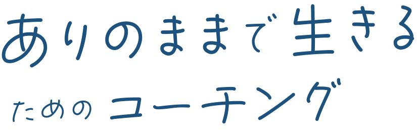

ありのままで生きるためのコーチング

自分は何も悪くないのに、
なぜこんなに苦しい思いをしなきゃいけないの？
これまでセクシャルマイノリティー、いわゆる「LBGTQ」と呼ばれる方々から
多くのお悩みを聞いてきました。
かつての私自身も同じように悩みを抱え、どこか自分を
偽る人生を歩んでいました。
例えば、このようなお悩みをお持ちではないでしょうか？
- ・周りからの理解を得られない
- ・学校生活に馴染めない
- ・選べる職種が限られている
- ・同性の恋人がいて幸せなのに周りに言えない
本当によくわかります。
このページに辿り着いたのも
「何とか現状を変える方法はないのか」
と、必死に解決策を探し続けてこられたからでしょう。
実際に、LBGTQに対する世間の理解はまだ充分に得られて
いるとはいえない状況ですし、公的機関の支援制度もまだ
まだ不十分です。
だからこそ、私は「コーチング」と呼ばれる手段を用い
て、LBGTQであることを理由に苦しんでいるあなたの
お力になりたいと考えました。

「ありのままで生きるためのコーチング」では、
その名のとおりコーチングによるサポートを、LBGTQの方向けに実施いたします。
「ありのままで生きるためのコーチング」では、その名のとおり
コーチングによるサポートを、LBGTQの方向けに実施いたします。
そもそもコーチングとは、あなた自身が
「新しい気づき」や「考え方や行動の選択肢」を得られる「きっかけ」
を与えるものです。
塾のように、指導者から何かを教わるわけではありませんし、
心療内科のような医療行為も行いません。
その代わりに
あなたとの「対話」を通じて、
今後理想の未来を実現するための「ロードマップ」
を一緒に作成します。
- LBGTQであることをどのようにしてカミングアウトするか
- 理想の進路を実現するためにはどのようなステップを踏んでいくべきか
- 収入を上げるためにはこれから具体的に何をすべきか
このようなことを、あなたと二人三脚で考えていきます。

「ありのままで生きるためのコーチング」では、おもに3つのサポートであなたの理想の未来
を叶えるお手伝いをさせていただきます。
すべてのサポートは代表である、相原が直接行います。
他のスタッフに任せるケースとは異なり、サポートの質にばらつきが出てしまうことは
ございませんので、ご安心ください。
1 ロードマップ作成
ヒアリングを行い、一緒に個別のロードマップを作成します。
今の状況や悩み、実現したい未来は人それぞれです。だからこそ、一人ひ
とりのお話をしっかり聞いたうえで、オーダーメイドのロードマップを一緒に作り上げます。
ロードマップは、あなたが現状から理想の未来へ歩むための最短距離を示すものにします。
ヒアリングでは深い自己開示をお願いするため、痛みを伴うこともあるで
しょう。しかし、乗り越えられた先の未来では今と世界が違って見えるで
しょう。
2 月２〜４回のオンライン面談
ロードマップを作り、やるべきことが明確になったとしても、一人でその
とおりに歩むことは難しいでしょう。
そのため、定期的なオンライン面談によって、あなたがロードマップを遠
回りすることなく歩めているか確認させていただきます。
もちろん、ロードマップを歩むなかでもつらいことは多々あるはずです
し、相談できる方が周りにいることはあまりないでしょう。
そのようなときでも、私が相談役としてオンラインで顔を合わせ、対話で
あなたの心の支えになります。
3 24時間対応のLINEチャットサポート
3. 悩みや不安、何より自分自身と向き合うことによるストレスは、時にあ
なたの心を蝕むこともあるでしょう。
過去のトラウマが突然フラッシュバックしたり、言葉に出来ないような漠
然とした将来の不安でつらくなったり。
本当に、いつそうなるか予測できませんよね。
でも、ご安心ください。「ありのままで生きるためのコーチング」では、
公式LINEのチャットで、24時間いつでもあなたのお話をお聞きします。
LBGTQの大きな悩みのひとつが、周りに相談できないということです。
私自身も痛感してきたことですので、いつでも支えになりたいと考え、
LINEチャットサポートもご用意させていただきました。

「ありのままで生きるためのコーチング」で見えてくる未来は、まさに「あなたが望む未
来」もしくは今のあなたでは想像もしていない未来かもしれません。
- 心が変われば行動が変わる
- 行動が変われば習慣が変わる
- 習慣が変われば人格が変わる
- 人格が変われば運命が変わる
哲学者ウィリアム・ジェイムズの格言です。
1歩1歩の歩みを進めることで、拓ける未来が見えてきます。
例えば下記のような理想が現実になるかもしれません。
- ・着たい服を着て外を歩ける
- ・同性の恋人と手をつないでデートできる
- ・友人との恋バナで堂々と惚気られる
- ・得意なことを活かしてキャリアアップできる
- ・自己肯定感が上がりポジティブ思考になれる
「私に本当に出来るの？」
そう不安になる気持ちも理解できます。
ですが「ありのままのあなた」はそれを顕在的、
もしくは潜在的にでも望んでいるのではないですか？
「ありのままの自分で生きるためのコーチング」を受けることによって、
あなたは自分が本当に欲しいもの、自分の新たな可能性、自分の過去の別解釈に
気付けるかもしれません。
そうなれば、人生の幸福度は、現状とは比べ物にならないほど高まるでしょう。

お客様からは、このようなご感想を頂いております。
-

Mさん 30代LGBTQ当事者女性
まさきさんのおかげで人生変わりましたよ！大袈裟ではなく！転職することに迷いがありましたが、まさきさんに出会ってこの方について行ってみようと思えました！興味のある仕事も未経験で何も分からなかった私にも丁寧に分かりやすく教えていただき、また、アドバイスや提案などもしていただいたりと、他人の為に動ける方だなぁと思いました。また、真面目な話だけではなく、気さくに話していただけるので、親しみやすく、何でも話しやすいと感じてます。
-

Dさん 20代LGBTQ当事者
本当に就きたかった仕事に就けて、収入も1.3倍になりました。フルリモートになり、通勤の時間が省け、自分の時間に余裕もできました。その時間をスキルアップに活用して、収入もどんどん上げていければと思います💪仕事内容は楽しく、希望どおりキャリアチェンジできてよかったと思えてます
-

Aさん 50代女性
月収ですが、パートで一日6時間を4日、外で働いていた頃は多くても15万くらいでした。今は、1案件15万とかもあるので、収入は30〜50万になりました！あのまま雇われて、時間の切り売りをしていたら叶わない金額ですよね
-

Yさん 50代女性
将希さんのマイノリティの方に寄り添える繊細さに共感します。私は、もうすぐ60になるんですが、20歳頃から持病に悩まされ、ずーっと何かに取り憑かれている感じで過ごしてきました。ここ3〜4年で、良いお薬と出会ったことで、すっかり良くなっています。その時に、時代もそうでしたが、自分が気持ちの病気であることをカミングアウトできなくて、隠しながら治療に行ったり、気づかれないようにしていた過去があります。全ての人がフラットに自分を出せる世界であってほしいと願っています。そういった意味で、実際活動されている将希さんの活動に感動したわけであります
こんな方におすすめ

・現状を変えるための道標が欲しい方
・理想の未来へ向かって諦めずに歩みを続けられる方
・すぐに結果が出るものではないとご理解できている方
・ロードマップを素直に進んでいける方
・問題を他者ではなく自身の中から発見できる方
・自己開示の痛みに耐えられる方
利用方法

代表あいさつ

よくあるご質問

ご利用にあたっての注意事項